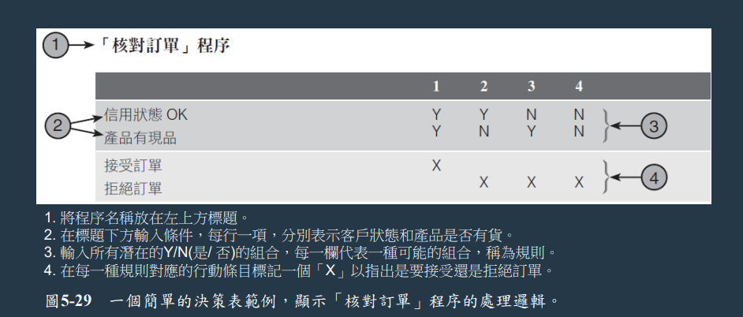
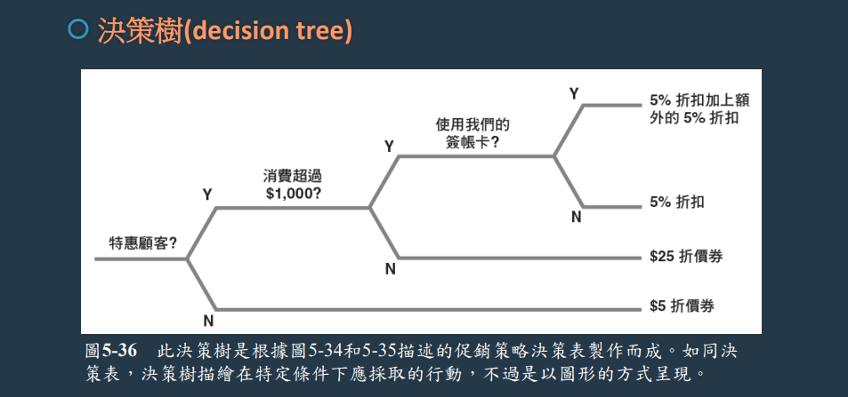
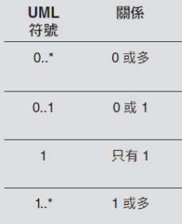
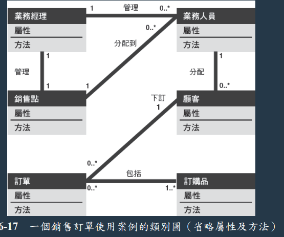
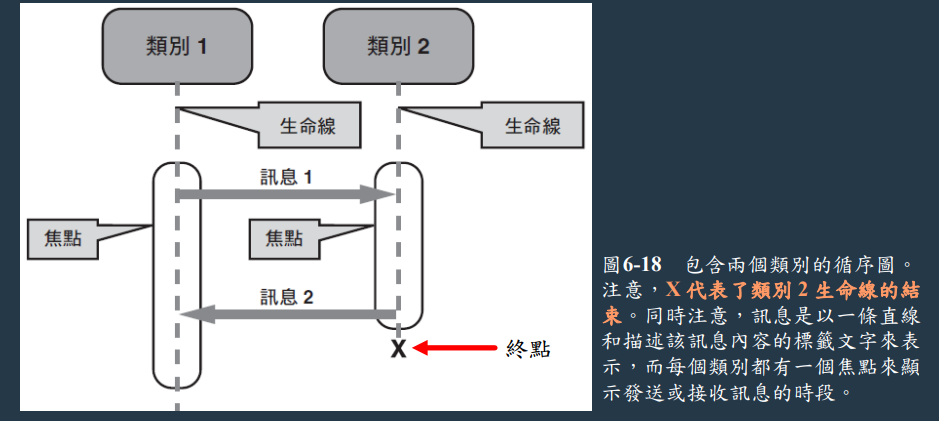
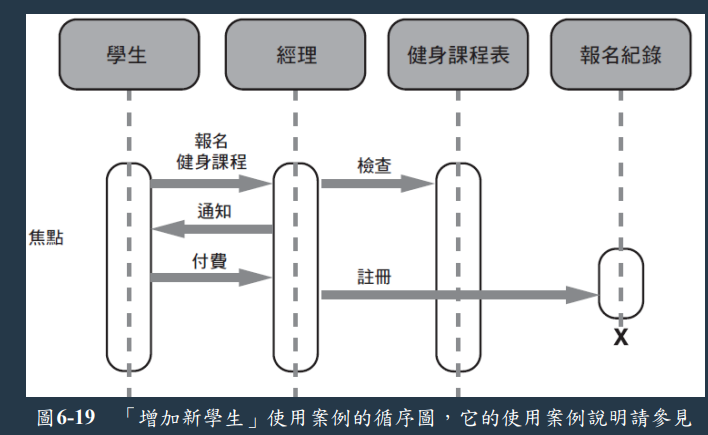
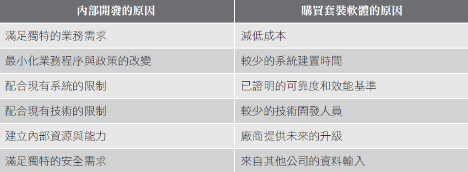
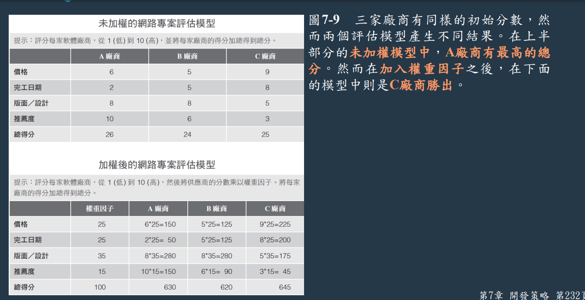

陳杰龍的筆記網站
陳杰龍的筆記網站 主頁
主頁 歸檔
歸檔 分類
分類 其他
其他 關於我
關於我 系統分析與設計 期末筆記
系統分析與設計 期末筆記
第五章
- 四模型法與其優缺點
- 邏輯模型(logical model)，表示系統必須做成什麼(what) 樣子
- 實體模型(physical model)， 描述系統如何(how)建構
- 實體模型
- 邏輯模型
- 新系統邏輯模型
- 新系統實體模型
- 優點
- 能在進行任何修改或改進之前，清楚地明白現行系統的功能
- 可將舊系統的邏輯模型適應新系統的邏輯模型
- 缺點
- 建立舊系統的邏輯和實體模型需付出額外的時間
- 資料流向圖定義與基本符號
- 定義
- 使用數種不同的符號來呈現系統如何將輸入資料轉為有用的資訊
- 基本符號

- 定義
- 三種必須避免的程序與資料流結合方式 (黑洞、灰洞等)
- 自然生長(spontaneousgeneration)
- 程序沒有輸入
- 黑洞(black hole)
- 程序沒有輸出
- 灰洞(gray hole)
- 輸入明顯無法產生其輸出

- 自然生長(spontaneousgeneration)
- DFD圖符號正確/錯誤判斷
- 資料流必須至少在其中一端存在一個程序符號
- 資料儲存處至少都有一個流入和一個流出的資料流，利用這些資料流連接到程序符號
- 一個外部實體可以是資料的來源端或接收端，或兩者都是，而實體一定要透過資料流連接到程序


- 繪製DFD的準則/技巧, 如系統環境圖、DFD圖0等
- 一整頁來繪製系統環境圖
- 每個符號都使用唯一的符號
- 不要出現交錯線條
- 為每個程序提供一個唯一的名稱和參照號碼
- 使用資訊系統的名稱來命名系統環境圖中的程序
- 盡可能取得更多使用者輸入跟反饋
- 模組化設計
- 基於三個邏輯(控制)結構的結合，是程序的組成要素
- 序列(sequence)

- 選擇(selection)

- 反覆(iteration) 迴圈 (looping)

- 序列(sequence)
- 基於三個邏輯(控制)結構的結合，是程序的組成要素
- 結構化英文
- 標準英文的一個子集，可以清楚又精確地描敘邏輯程序
- 規則
- 只使用序列、選擇、反覆做為三個組成要素
- 清楚又精確地描述邏輯程序，使用縮排
- 盡可能用最少單字、簡單表達
- 決策表/決策樹 (畫法)
- 決策表
- 可以顯示一個邏輯結構，而且可以列出所有條件與其結果的可能組合，以表格方式
e.g. 一個條件，兩種可能；2個條件，四種可能；3個條件，8個可能
- 可以顯示一個邏輯結構，而且可以列出所有條件與其結果的可能組合，以表格方式
- 決策樹
- 利用圖形化的方式來呈現決策表的條件、行動和規則，並以水平方式表現

- 利用圖形化的方式來呈現決策表的條件、行動和規則，並以水平方式表現
- 決策表
- 決策表 vs. 決策樹
- 主要依照個人喜好
- 決策表->適合複雜的條件組合
- 決策樹->適合簡單的程序
第六章
- 何謂物件導向分析? 其包含三個元素(物件、屬性、方法) 並簡易說明
- 利用將所有事物都視為物件的方式來描述資訊系統
- 物件
- 物件則是包含資料本身及影響該資料的流程
- 屬性
- 物件具有一些屬性，用來描述物件的一些特質
- 方法
- 當物件收到訊息或指令時所執行的任務或功能
- 何謂類別? 有哪幾種分類? 並舉例說明這些類別種類之間的關聯性
- 同一群或同一類的物件稱為類別(class)
- 三種
- 超類別
- 類別
- 子類別
- 舉例
- 在一個健身房，"人"超類別包含共通的屬性與方法，"員工"是屬於"人"超類別中的類別，"教練"是"員工"類別中的子類別
- 在一個動物園，"動物"超類別包含共通的屬性與方法，"老虎"是屬於"動物"超類別中的類別，"白虎"是"老虎"類別中的子類別
- 何謂繼承? 請說明其物件關係
- 繼承可以讓子物件衍生父層物件的一個或多個屬性
- 教練物件(子物件)從員工物件(父層物件)繼承很多特性，包刮電話、到職日。教練也可以有其他屬性，如教練種類
教練透過繼承擁有這些屬性，無須在教練物件中重複宣告
- 類別圖與循序圖之定義與其相關的符號說明
- 類別圖
- 類別圖表示單一使用案例的詳細圖解，它顯示參與這個使用案例的類別並且記載類別之間的關係
- 類別圖有一個稱為基數的觀念，用來描述兩個類別實例之間的關係


- 循序圖
- 一個使用案例的動態模型，它顯示了類別在特定期間內的互動情況
- 符號說明
- 類別：可以發送或接收訊息
- 生命線(lifeline)：用虛線表示，代表其上的物件可以和使用 案例中其他物件進行互動的期間，X表示終點
- 訊息：可以包含其他附加資訊
- 焦點(focus) ：用來指出一個物件發送或接收訊息的時間


- 類別圖
第七章
- 傳統式開發策略的優缺點 (請舉例1~2個)
- 優點
- 安全問題沒有Web式複雜，系統通常都在私有網路運作，非網際網路
- 缺點
- 系統設計容易受到相容性問題的影響，包括軟硬體、舊系統需求
- 可延展性受到電信通訊限制和區域網路限制的影響
- 優點
- Web式開發策略的優缺點 (請舉例1~2個)
- 優點
- 延展容易，並且可以運作於數種硬體環境
- Web式軟體將應用程式視為一種服務，較低程度依賴桌上型電腦的運算能力與資源
- 缺點
- Web式解決方案會引發一些比較複雜的安全問題，這些問題急待解決
- 通常需要多一層中介軟體，與原系統和軟體進行溝通
- 優點
- 近年來的開發趨勢策略? (請舉例兩個策略並說明)
- 雲端運算：雲端運算是一種模式，能方便且隨需求應變地透過連網存取廣大的共享運算資源(網路、伺服器、應用程式、服務)，並可透過最少的管理與服務供應者的互動，快速提供各項服務
- 行動裝置：不管式個人還是公司內工作使用，現在手機與平板電腦隨處可見，目前的行動裝置都有足夠的運算能力，幾乎每款手機都可以處理複雜的運算，這就是邊緣運算，在使用者的手上直接處理
- 內部開發 vs. 套裝軟體採購時必須考慮各種因素

- 委外費用模式包含哪幾種並說明
- 固定資費模式：有一套費率，依服務和顧客支援的層級收取費用
- 會員資費模式：依存取應用程式的人數或工作站數目來收費
- 使用度模式：依應用程式執行的操作或交易量來收費
- 作業模式：依應用程式執行的操作或交易量來收費
- 海外委外的疑慮
- 一些公司的員工、顧客和股東反對這個趨勢，並引起了公眾對於可能的經濟影響的關注
- 會產生對專案控制、安全議題、文化差異和有效溝通的疑慮
- 未加權/加權後的網路專案評估模型

- 軟體採購流程之方案評估包含哪幾種方法 (舉例兩種)
- 現有使用者
- 從現在在使用此產品的使用者獲得意見並了解使用經驗
- 應用軟體測試
- 讓公司或組織中的使用者試用這個產品
- 軟體基準測試
- 為了知道一套軟體能否有效的處理一定量的交易作業，可以進行軟體基準測試
基準是用來衡量一套軟體處理一定量的作業需要花多少時間
- 為了知道一套軟體能否有效的處理一定量的交易作業，可以進行軟體基準測試
- 現有使用者
第八章
- 介面設計師的七大基本原則 (舉1~2個原則)
- 了解企業功能
- 基本的企業功能 -> 如何支援個人、部門和企業的目標
- 設計一個介面幫助使用者執行他們的工作
- 圖形效益最大化
- 設計良好的GUI 可幫助使用者快速學習一套新系統
- 使用者可有多個視窗同時執行工作或是在程式之間傳輸資料
- 以使用者身分思考
- 使用者的經驗、知識、與技能程度。如使用者的能力涵蓋廣泛， 此系統就須具備彈性可適用初學者與有經驗使用者
- 以使用者身分來思考，且透過使用者的眼睛來看系統
- 使用模型和雛型
- 建立系統設計的模型與雛型->盡早取得使用者回饋
- 透過分鏡板(storyboard) 的形式向使用者展示初始的螢幕設計
- 著重於可使用性
- 畫面顯示主要選項
- 提供一個合理的選項數量，讓使用者可以輕鬆地理解
- 持續回饋流程
- 監控系統的使用和徵求使用者建議是十分重要的
- 透過觀察和調查使用者，可確定系統是否如同預期的使用
- 記載介面設計
- 所有的畫面設計都應該記載成文件，以便之後讓其他程式設計師 使用
- 認可過的草圖和分鏡板也可以用來建立使用者介面文件
- 了解企業功能
- 使用者介面設計指導方針 (十個規則)
- 建立一個易於學習和使用的介面
- 提高使用者生產力
- 提供彈性
- 提供使用者協助與反饋
- 建立一個具吸引力的畫面和設計
- 加強介面
- 著重於資料登錄畫面
- 使用驗證規則
- 有效的管理資料
- 減少輸入量
- 常見的八項資料驗證規則
- 順序檢查(sequence check)
- 存在檢查(existence check)
- 資料型態檢查(data type check)
- 範圍檢查(range check)
- 合理性檢查(reasonableness check)
- 驗證檢查(validity check)
- 組合檢查(combination check)
- 批次控制(batch control)